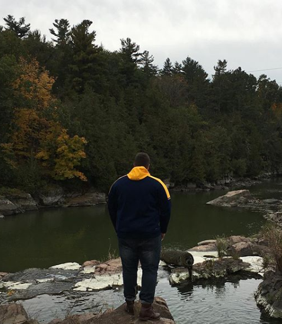
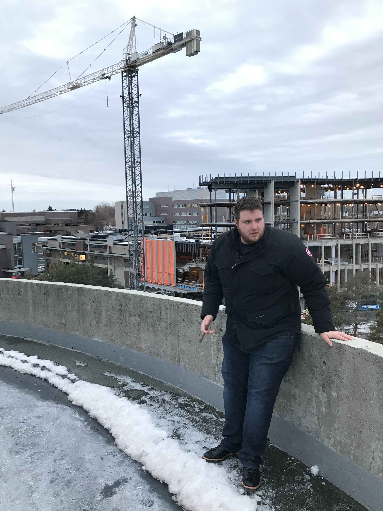
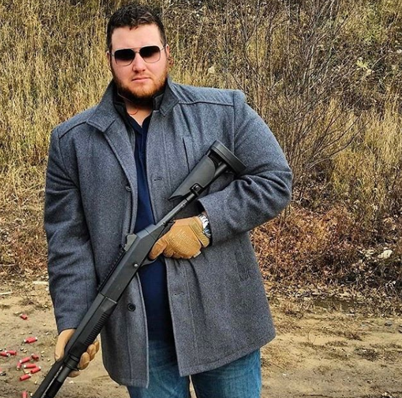

An environmental & geotechnical scientist with an interest in rocks, the outdoors, and coffee.


Originally from San Jose, California -
Raised in Kanata, Ontario -
Graduated from Queen's University
Enjoys shooting, lifting weights,boxing, hockey, and relaxing with a coffee & a Cohiba.

I strive to be the best geologist.